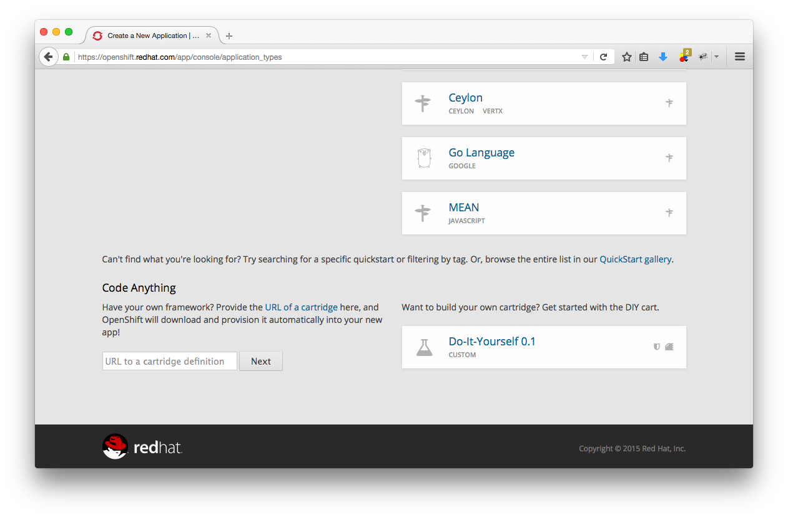
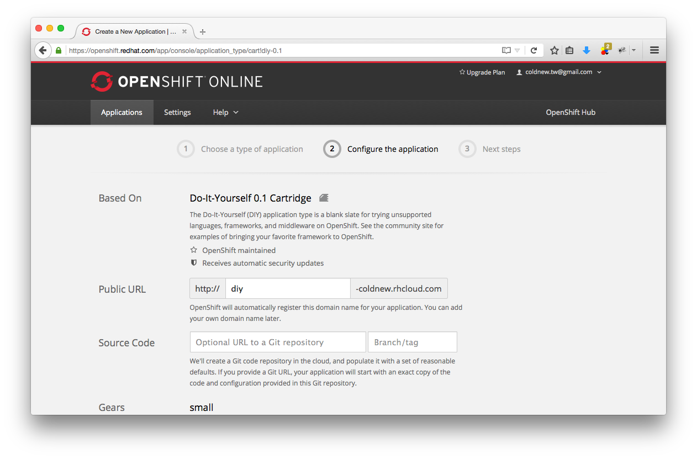

OpenShift 是由 RedHat 所提供的 PaaS 平台服務，除了提供無限流量以外，亦支援使用 SSH 登入，本文將簡單解釋如何在 Mac OSX 以及 Linux 下，將 OpenShift 作為跳板並利 用 SSH 作為 Socks5 的代理伺服器，去下載那些不好下載的檔案 or…中國網友的說法:翻 牆。
如果你是 Windows 的用戶，請參閱: 利用 OpenShift 的 SSH 架設跳板 一文。
在 OpenShift 建立應用程式
在註冊完 OpenShift 後，我們要建立一個簡單的程式來讓我們可以透過 SSH 登入
OpenShift，這裡選用 Do-It-Yourself 這個類型

接下來隨便設定一個 URL, 並建立這個程式

因為我們只是要使用他的 SSH 功能，因此選擇 Continue to the application overview
page 功能到設定頁面即可
使用 SSH 登入 OpenShift
進入你的 Application 裡面，你會在 Remote Access 那邊看到使用 ssh 登入用的 路徑與命令，我們設定完 ssh 金鑰後就是用這組命令去登入 OpenShift 裡面
那要怎樣上傳公匙給 OpenShift 呢？我是直接使用 OpenShift 提供的命令 rhc ，這個
命令可以透過 gem 進行安裝
coldnew@Rosia ~ $ sudo gem install rhc Fetching: net-ssh-2.9.2.gem (100%) Successfully installed net-ssh-2.9.2 Fetching: net-scp-1.2.1.gem (100%) Successfully installed net-scp-1.2.1 ...... Done installing documentation for archive-tar-minitar, commander, highline, httpclient, net-scp, net-ssh, net-ssh-gateway, net-ssh-multi, open4, rhc after 29 seconds 10 gems installed
接下來就可以使用 rhc setup 讓 rhc 命令幫你自動將公鑰送到 OpenShift 伺服器上
coldnew@Rosia ~ $ rhc setup
OpenShift Client Tools (RHC) Setup Wizard
This wizard will help you upload your SSH keys, set your application namespace, and check that other programs like Git
are properly installed.
If you have your own OpenShift server, you can specify it now. Just hit enter to use the server for OpenShift Online:
openshift.redhat.com.
Enter the server hostname: |openshift.redhat.com|
You can add more servers later using 'rhc server'.
RSA 1024 bit CA certificates are loaded due to old openssl compatibility
Login to openshift.redhat.com: coldnew.tw@gmail.com
Password:
完成後，你就可以使用剛剛建立的 Application 的 SSH 登入方式登入你的 OpenShift 伺服器
coldnew@Rosia ~ $ ssh 5a409bf87b28e194ca00d005@diy-coldnew.rhcloud.com
*********************************************************************
You are accessing a service that is for use only by authorized users.
If you do not have authorization, discontinue use at once.
Any use of the services is subject to the applicable terms of the
agreement which can be found at:
https://www.openshift.com/legal
*********************************************************************
Welcome to OpenShift shell
This shell will assist you in managing OpenShift applications.
!!! IMPORTANT !!! IMPORTANT !!! IMPORTANT !!!
Shell access is quite powerful and it is possible for you to
accidentally damage your application. Proceed with care!
If worse comes to worst, destroy your application with "rhc app delete"
and recreate it
!!! IMPORTANT !!! IMPORTANT !!! IMPORTANT !!!
Type "help" for more info.
[diy-coldnew.rhcloud.com 5a409bf87b28e194ca00d005]\>
使用 ssh -D 來建立 SOCKS5
不管是 Linux 還是 Mac OSX 以及 BSD，我們都可以直接使用 ssh -D 來建立我們的
SOCKS5 伺服器，假如我們要將本地端的 10800 port 串向 OpenShift 的 ssh server，則
可以這樣作
coldnew@Rosia ~ $ ssh -D 10800 5a409bf87b28e194ca00d005@diy-coldnew.rhcloud.com ...... skip [diy-coldnew.rhcloud.com 5a409bf87b28e194ca00d005]\>
你會發現到我們還是登入到了 OpenShift 伺服器，只要在你不關掉這個連線，那你建立的
SOCKS5 就會一直保持。如果你想在同一個 shell 下繼續做事，你可以加上 -f 參數讓你
的 ssh 程式執行在背景中。
在 Mac OSX 下設定 SOCKS5 proxy
在剛剛的範例中，我們已經建立了本地端的 10800 port 作為 proxy 導向 OpenShift，
現在要在 Mac OSX 下進行剩下的設定。
首先進入到 System Preferences
選擇 Network 進入到你的 Wifi 設定，填上 proxy 資訊並按下 Apply 按鈕後設定就完成了
在 Linux 下設定 SOCKS5 proxy
如果你使用 GNOME 3，則可以到 Settings 的 Network 選項來進行設定
在 Firefox 下設定 SOCKS5 proxy
如果你不想改動系統設定，只想設定 Firefox 的話，則可以到 偏好設定 裡面去設定， 首先進入到 進階 頁面
接著點選 連線 -> 設定 ，並加上我們的 proxy 資訊
檢查自己的 IP 是否改變
按照前面的設定，完成了以後你可以到 http://www.whatismypublicip.com/ 之類的網站檢 查自己的 IP 是否改變了!
延伸閱讀
[2] Really simple SSH proxy (SOCKS5)
[4] [[http://blog.longwin.com.tw/2010/01/linux-ssh-socks-firefox-pidgin-2010/][Linux 透過 SSH SOCKS 連線 來 使用 Firefox / Pidgin(MSN, GTalk.[[file:][]]]
[5] Turn any Linux computer into SOCKS5 proxy in one command